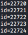
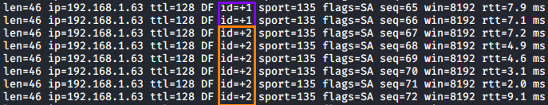

nmap+hping3 (more reliable)
To avoid false negative
This method with hping is more reliable, since the Idle Scan (-sI) could give us the error “
port ... cannot be used because it has not returned any of our probes -- perhaps it is down or firewalled” when is not true
Sometime manual check is more accurate than automated one, a port labeled by nmap as closed|filtered maybe is open, if we are dubious we can do a double check manually.
We can spoofing with hping3(-a) while in the meantime monitor the IP ID with hping3 to check if there is any increment of the IP ID
0. Finding a Working Idle Scan Zombie Host Use NSE script that automatically check if a host is good zombie candidate
We can specify also more than one host and use a list file with -iL
Find a host with the value
Incremental nmap --script ipidseq <IP_ADDRESS>
we can detect if the host is a good zombie by estimating the host (zombie) traffic with hping3.
In the following example the ID increments by 1, meaning that the host does not communicate with any machine on the network but only with us, making it a possible zombie candidate
hping3 -S -r [ZombieIP] -p [ZombiePort] hping3 -S -r 192.168.1.76 -p 135
→ allows us to see the relative ID increments instead of the actual ID.
Otherwise we will see the actual ID:
 if the IP ID increases by one, it can be considered a viable candidate.
But we can never be 100% sure because:
▪ We have to validate if it is a global or local increase
▪ Some hosts increase IP ID on a per host basis
-p → sets the destination port, which in our case is 135
Leave open this connection and execute command
2. hping3 spoofing Now that we have found our target zombie(192.168.1.63) we can use hping3 to craft packets that will be sent to the target host we want to scan with source IP address of our zombie
hping3 -a [ZombieIP] -S -p [TargetPort] [TargetIPaddress] hping3 -a 192.168.1.63 -S -p 139 192.168.1.42
→ spoof the zombie source address, this become the source IP address
-S → SYN flag enabled
-p → destination port of the packet
From this packet we not receive any response! We need to check the tab of point 1
To know if the TargetPort of the TargetIPaddress is open we have to continue to run the command at the point 1, If in the output the
ID increment is +2 this mean that the TargetPort is open
